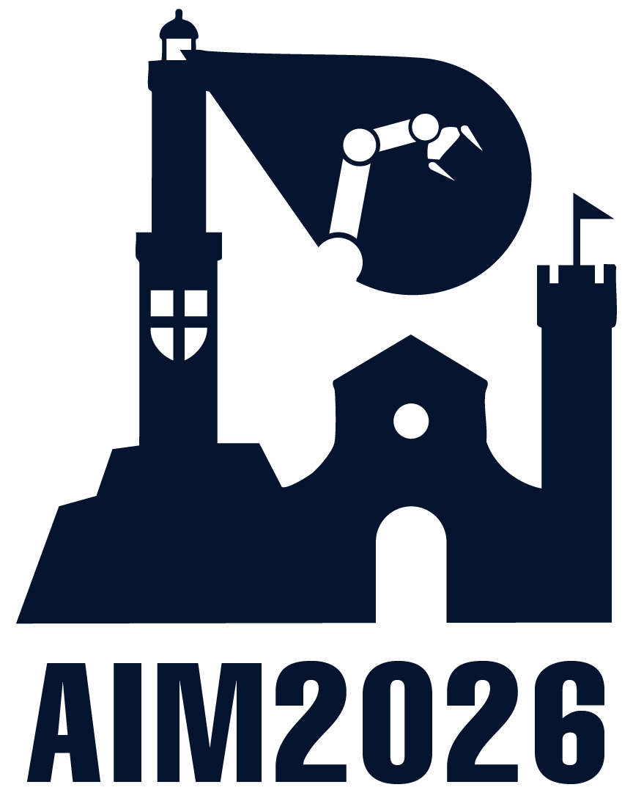
This workshop is organized in conjunction with the IEEE/ASME International Conference on Advanced Intelligent Mechatronics (AIM 2026), which will be held in Genova, Italy, from July 7th to 10th, 2026. For registration and details about the main conference, please visit the official AIM 2026 Website.
The design philosophy underlying modern robotics is not monolithic; rather, it evolves dynamically in relation to the scale and complexity of the problem addressed. Advanced robotic systems rely on a continuous dialogue between their physical embodiment and their algorithmic intelligence. On one hand, intelligence does not reside solely in software but is encoded within the robot’s mechanics—a form of Embodied Intelligence that defines intrinsic capabilities in perception, action, and safety. On the other hand, the Algorithmic Intelligence of software expands these abilities, enabling versatility and complex behaviors that cannot be realized through matter alone.
In robotics, a fundamental dichotomy is often faced: should a specific function be delegated to the hardware or to the software?
This workshop proposes to explore this duality by tracing a "Mechatronic Arc," a narrative path that guides participants from a paradigm of component-level trade-offs to one of system-level synthesis. By fostering a direct comparison between leading researchers who approach similar challenges from opposing paradigms, the workshop is structured into two distinct Acts:
In the realm of component design, the engineer is frequently tasked with selecting the optimal tool for a singular purpose. This section investigates the functional trade-offs where physical laws and control laws compete for supremacy, debating whether the task is better achieved through material properties or mathematical models.
We will analyze how contact perception can be achieved through dedicated sensorization versus software estimators; how compliance can be an intrinsic material property versus a control-simulated behavior; and how safety can be guaranteed by passive mechanical constraints versus active algorithmic barriers.
Transitioning to high-complexity systems, the separation between “controller” and “plant” becomes an obstacle rather than a design choice. This section illustrates that for sophisticated robots—and especially for human-centered mechatronic devices—intelligence cannot simply be programmed “into” a machine but must be physically grounded “within” its morphology and interfaces.
By examining robot body co-design and rehabilitation/assistive robotics, it becomes evident that the most ambitious challenges cannot be solved by choosing between hardware and software, but only through their profound symbiosis. In these domains, mechanical architecture, physical coupling, and control policies must evolve jointly.
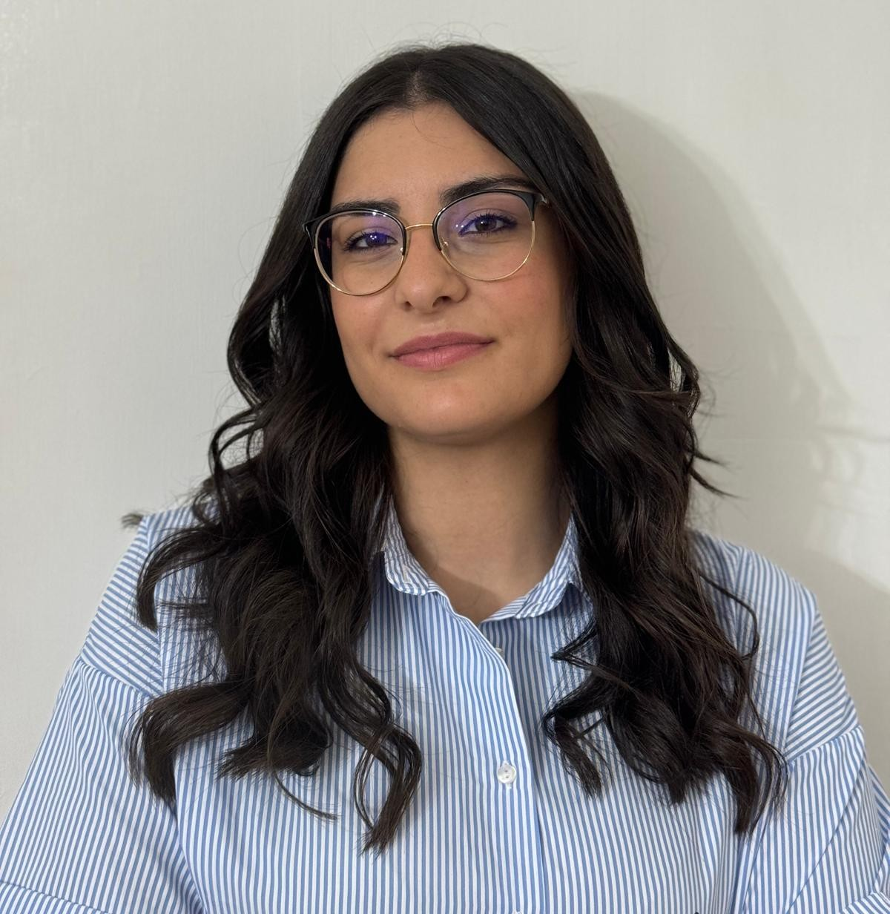
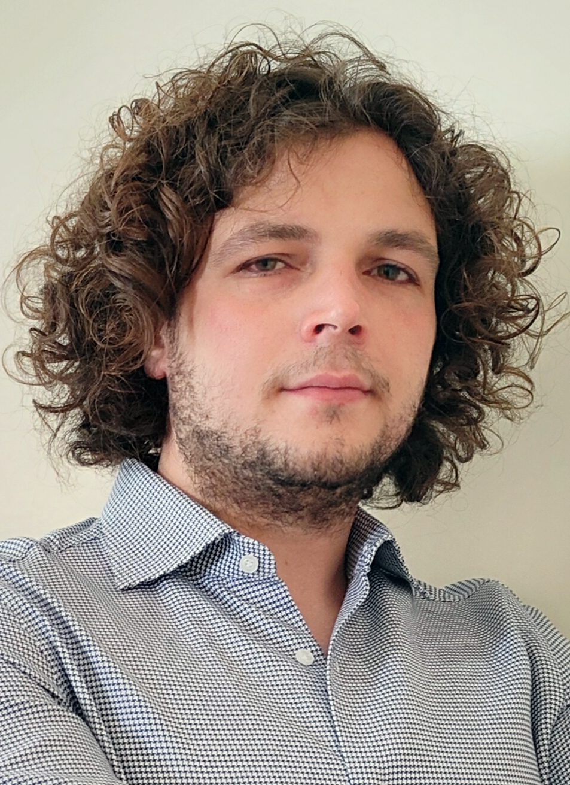
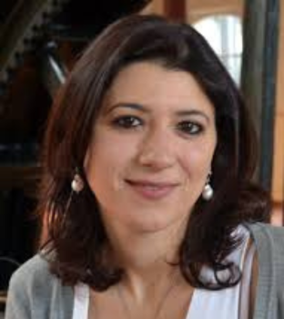
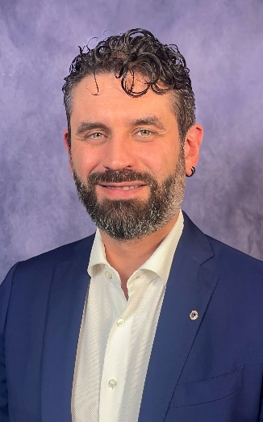
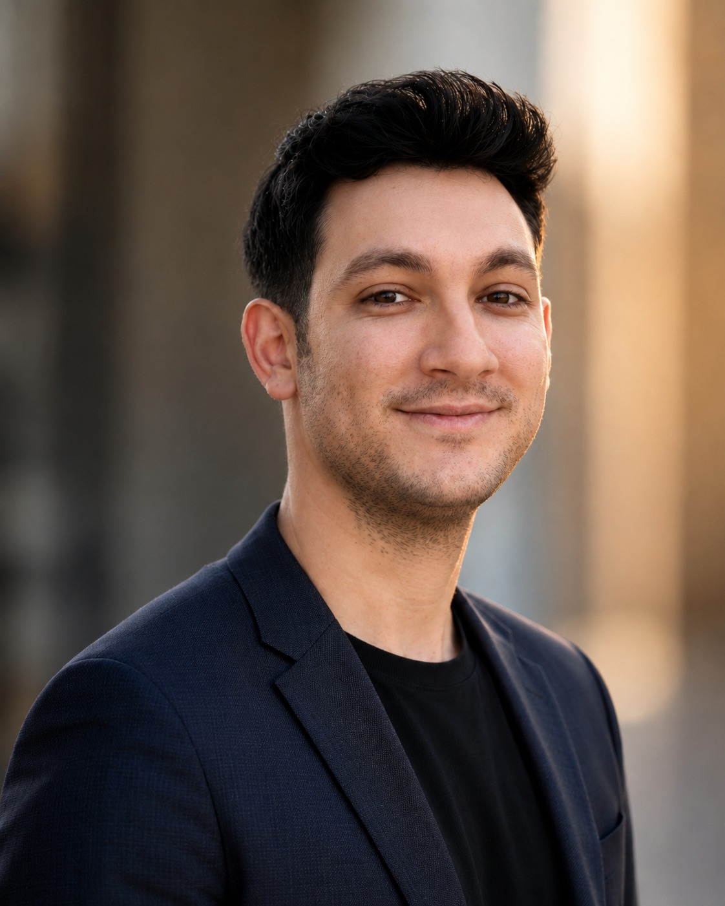
Federico Masiero Technical University of Munich His research focuses on wearable robotics, physical human-robot interaction (pHRI), and using soft magnetic sensors to transduce human motion.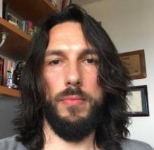
Manolo Garabini Università di Pisa His research centers on the design, planning, and control of soft adaptive robots, variable stiffness actuators, and collaborative humanoid joints.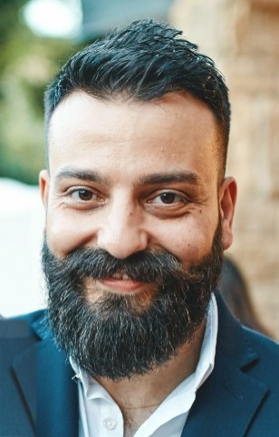
Matteo Saveriano Università di Trento His research integrates cognitive robots into factories and social environments, focusing on safe human-robot interaction and learning from demonstration.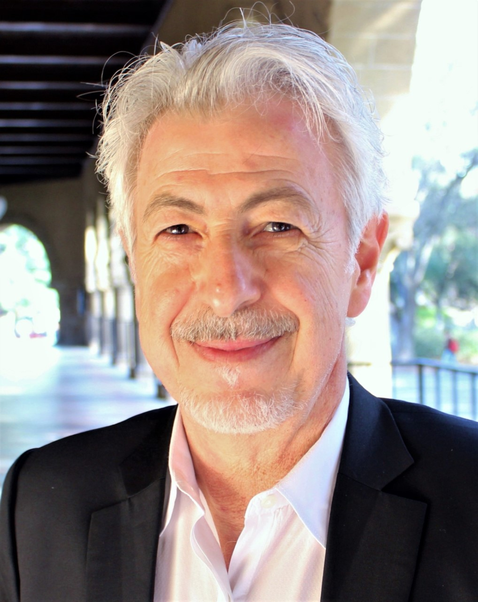
Oussama Khatib (to be confirmed) Stanford University A pioneer in robotics, his research focuses on human-centered robotics, advanced control architectures, and deep-sea robotic exploration.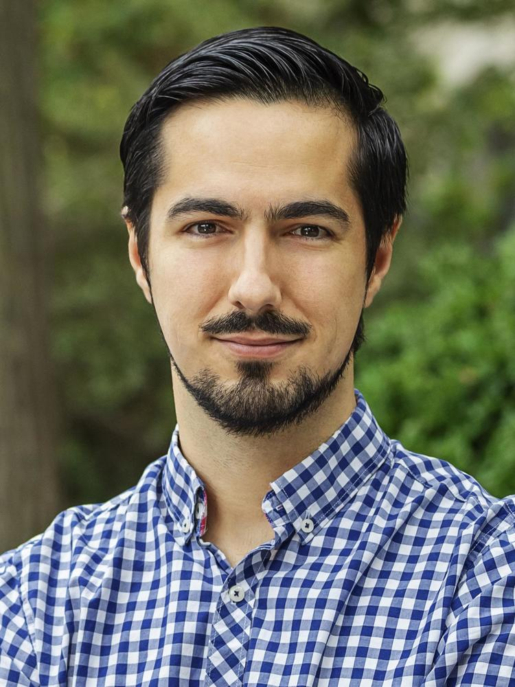
Jaime Fernández Fisac Princeton University His research focuses on safe robotics, control systems, game theory, and artificial intelligence to assure safety around humans in real-world settings.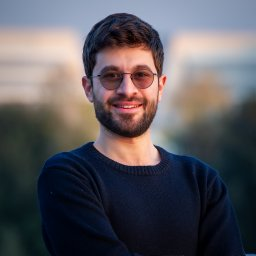
Matteo Russo Università di Roma Tor Vergata His research involves the design and modeling of continuum and soft robots for minimally invasive surgery and high-performance mechanism optimization.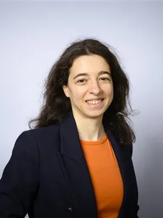
Maja Trumić Delft University of Technology Her research centers on control systems for articulated soft robots, variable stiffness actuators, and nonlinear adaptive control theory.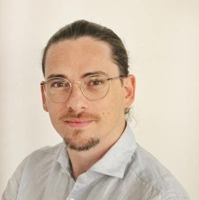
Emilio Trigili Scuola Superiore Sant'Anna His research is centered on wearable and rehabilitation robotics, specializing in exoskeleton design, control, and human intention-decoding.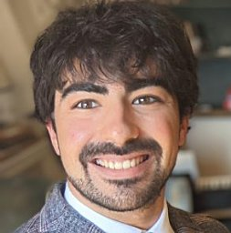
Federico Tessari (to be confirmed) Massachusetts Institute of Technology His research bridges rehabilitation robotics and motor neuroscience, investigating human motor coordination and custom electro-hydrostatic actuating units.| Time | Session / Activity | Slot Details |
|---|---|---|
| Act I: The Functional Dichotomy - Matter vs. Math | ||
| 11:15 – 11:25 |
Welcome & Introduction
The Mechatronic Arc: Bridging the Gap Between Physical Design and Computational Intelligence
|
10 min |
| 11:25 – 12:10 |
To be announced | F. Masiero (Click to view details)
|
45 min |
Session OverviewThis session questions the necessity of complex hardware for perception. On one side, the Embodied Sensing approach advocates for the integration of dedicated, high-fidelity sensory hardware—such as distributed tactile surfaces or specialized force/torque sensors—to grant robots a direct, physical sensitivity to their environment. On the opposing side, the Algorithmic Sensing perspective champions the use of advanced observers and data-driven techniques to transform the robot’s existing actuation system into a "virtual sensor." This approach focuses on estimating external forces and contacts through proprioception and mathematical models, eliminating the need for additional, often fragile, instrumentation. Hardware (HW)
To be announced“TBD (to be defined)” 🕒 20 min + 5 min Q&ASoftware (SW)
Federico Masiero“Magnetic Sensing for Human-Robot Interaction” 🕒 20 min + 5 min Q&A |
||
| 12:10 – 12:15 | Seating / Transition Delay | 5 min |
| 12:15 – 13:00 |
M. Garabini | M. Saveriano (Click to view details)
|
45 min |
Session OverviewAdaptability to the environment is crucial, but where should it originate? The Passive Compliance perspective focuses on designing actuation systems with intrinsic elasticity—ranging from soft fluidic actuators to mechanically variable stiffness mechanisms. In this view, compliance is a physical property inherent to the device, ensuring passive safety and energy efficiency at the source. In contrast, the Active Compliance approach (Variable Impedance Control) relies on stiff, high-bandwidth actuators governed by control loops that simulate virtual springs and dampers, offering programmable versatility that allows the robot's behavior to be radically altered without mechanical modification. Hardware (HW)
Manolo Garabini“Soft is Nothing Without Control” 🕒 20 min + 5 min Q&ASoftware (SW)
Matteo Saveriano“The Role of Energy and Geometry in Contact-Rich Manipulation” 🕒 20 min + 5 min Q&A |
||
| 13:00 – 14:00 | 🍽️ Lunch Break & Poster Session | 60 min |
| 14:00 – 14:45 |
O. Khatib (to be confirmed) | J. F. Fisac (Click to view details)
|
45 min |
Session OverviewWhen humans and robots share space, safety is non-negotiable. The Passive Safety perspective emphasizes intrinsic mechanism design, advocating for lightweight structures, mechanical joint limits, and impact-mitigating geometries. This philosophy relies on physical constraints to ensure that injury is physically impossible or drastically mitigated, providing a fail-safe layer that persists even in the event of a total control failure. Conversely, the Active Safety approach employs formal methods and real-time algorithmic filters (such as control barrier functions, reachable set analysis or safety filters). This methodology wraps the system in a "mathematical safety shield," allowing high-performance hardware to operate aggressively while providing certifiable guarantees that unsafe states remain unreachable via continuous software monitoring. Hardware (HW)
Oussama Khatib (to be confirmed)“TBD (to be defined)” 🕒 20 min + 5 min Q&ASoftware (SW)
Jaime Fernández Fisac“Safety through Intelligence: How AI and Control Theory Help Robots Preempt Harm” 🕒 20 min + 5 min Q&A |
||
| 14:45 – 15:05 |
Roundtable Act I
Act I: The Functional Dichotomy - Matter vs. Math
|
20 min |
| 15:05 – 15:10 | Seating / Transition Delay | 5 min |
| 15:10 – 16:00 |
M. Russo | M. Trumić (Click to view details)
|
50 min |
Session OverviewIn high-dimensional robots such as soft robots, the distinction between the "plant" and the "controller" becomes blurred. The Hardware Perspective focuses on advanced mechatronic architecture, illustrating how the physical design—including mass distribution, kinematic structure, actuator placement and mechanical stiffness—fundamentally shapes the robot's capabilities and pre-defines the solution space for the control problem. Complementing this, the Software Perspective focuses on high-level controllers such as data-driven (soft robots) or whole-body control (humanoids and quadrupeds) and planning, demonstrating how algorithms must orchestrate the massive kinematic and dynamic redundancy provided by the hardware to achieve robust locomotion, balance, and manipulation in unstructured environments. Hardware (HW)
Matteo Russo“Robot design: Reclaiming hardware in the age of AI” 🕒 20 min + 5 min Q&ASoftware (SW)
Maja Trumić“Tackling control challenges in soft robotics through model-based approaches” 🕒 20 min + 5 min Q&A |
||
| 16:00 – 16:30 | ☕ Afternoon Coffee Break | 30 min |
| Act II: The Necessary Symbiosis - When Bodies and Controllers Co-Evolve | ||
| 16:30 – 17:20 |
E. Trigili | F. Tessari (to be confirmed) (Click to view details)
|
50 min |
Session OverviewThe final session addresses the ultimate integration: the merging of robotic systems with the human body. In rehabilitation and assistive robotics, hardware and software must not only coexist but cooperate intimately with a biological partner, where the human becomes an integral component of the system dynamics. The Hardware Perspective focuses on the mechatronic design of exoskeletons and prosthetic devices. It argues that the physical interface—including kinematic compatibility, back-drivability, compliance, and ergonomic actuation—is a primary determinant of interaction quality. Here, “intelligence” is embodied in the mechanism’s ability to be transparent or supportive through its physical structure, providing an intrinsic baseline of safety and usability even under imperfect control. Conversely, the Software Perspective centers on Human-in-the-Loop control and intention estimation. This approach tackles the algorithmic challenge of inferring the user’s intent (via EMG, EEG, or interaction forces) and modulating assistance in real time (“assistance-as-needed”). Hardware (HW)
Emilio Trigili“Human-robot interaction in exoskeletons: from mechanical design to intention-aware control” 🕒 20 min + 5 min Q&ASoftware (SW)
Federico Tessari (to be confirmed)“TBD (to be defined)” 🕒 20 min + 5 min Q&A |
||
| 17:20 – 17:45 |
Roundtable Act II
Act II: The Necessary Symbiosis - When Bodies and Controllers Co-Evolve
|
25 min |
| 17:45 – 18:00 |
Closing Remarks
Wrap-up and farewells
|
15 min |